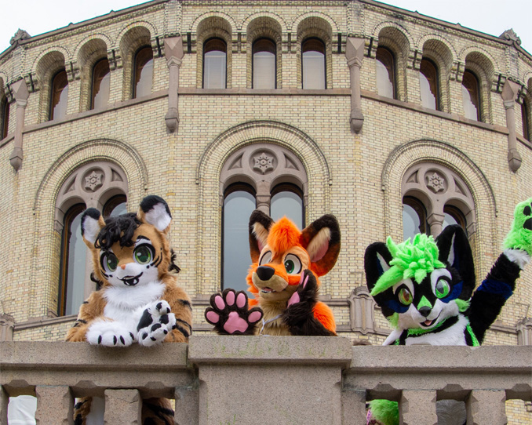
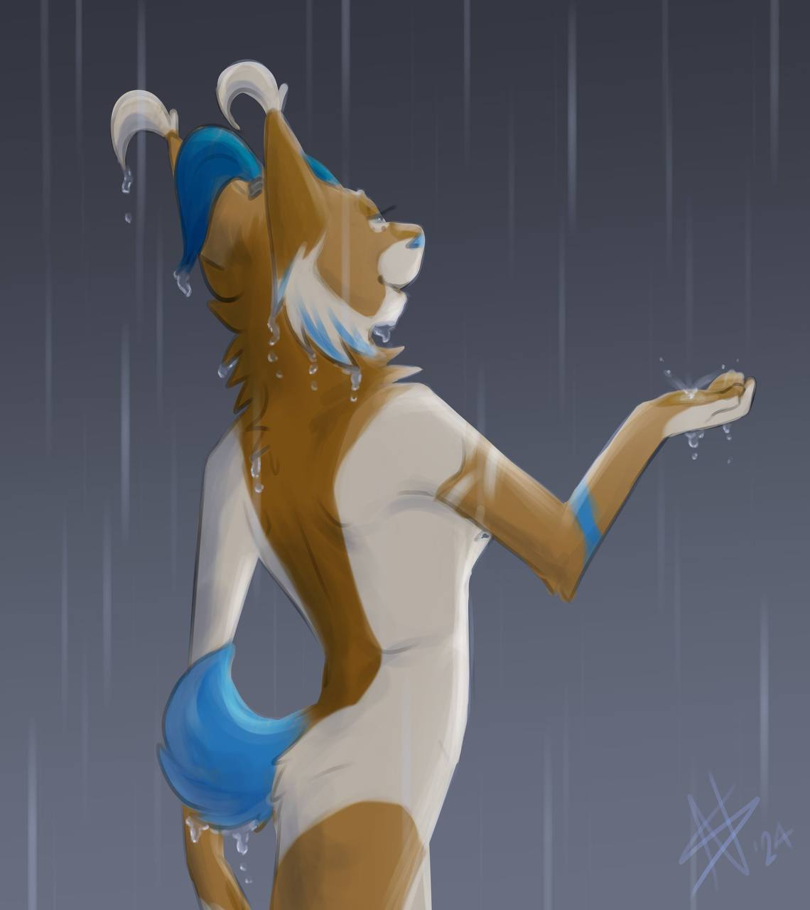

Velkommen til NAK - Norsk Antropomorfisk Kunstforening. Vi jobber for å promotere antropomorfe som et kunstform og representere kunsten i sitt vide spekter.
Hva er antropomorfisme? Antropomorfisme betyr menneskelignende. Det at noe som er antropomorft har menneskelig skikkelse eller menneskelige trekk. Ofte blir konseptet brukt i sammenheng med dyr, spesielt i det som i dag er kjent som furry-miljøet.
